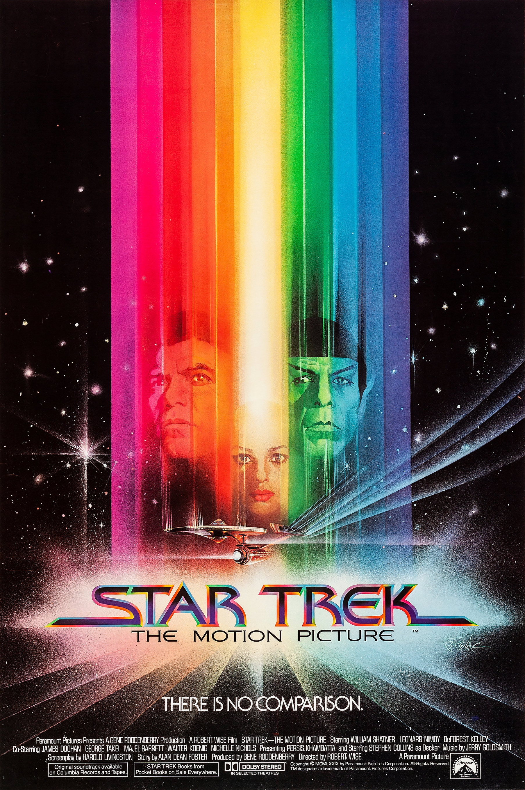

| Watched | ||
|---|---|---|
| Nominations | |||
|---|---|---|---|
| Category | Nominees | Result | Voted |
| Art Direction | Harold Michelson, Joe Jennings, John Vallone, Leon Harris, and Linda DeScenna | Nominated | |
| Visual Effects | Dave Stewart, Douglas Trumbull, Grant McCune, John Dykstra, Richard Yuricich, and Robert Swarthe | Nominated | |
| Music (Original Score) | Jerry Goldsmith | Nominated | |